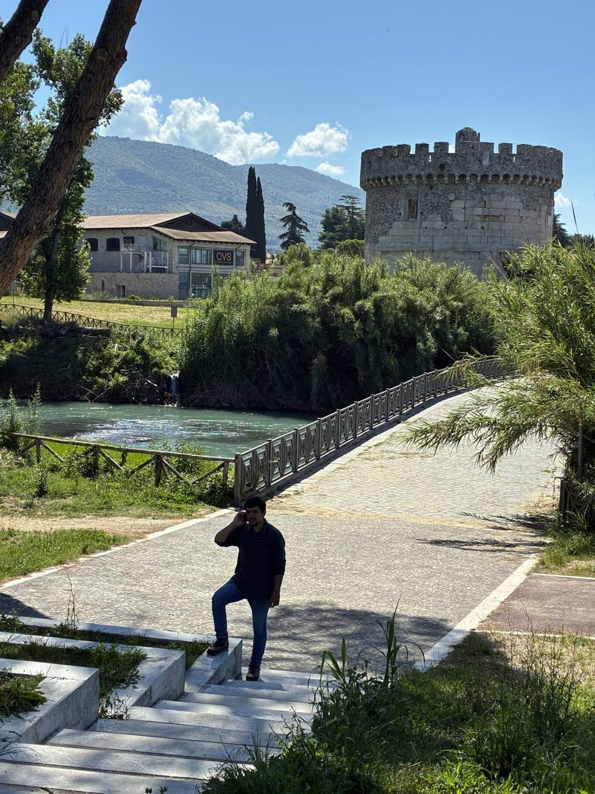
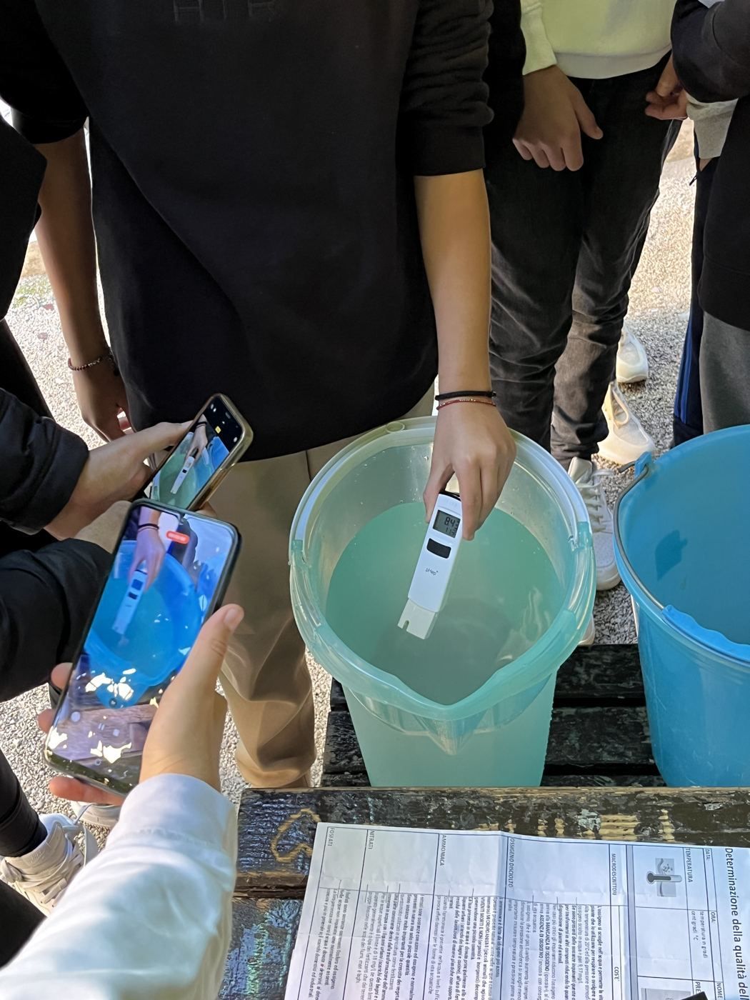
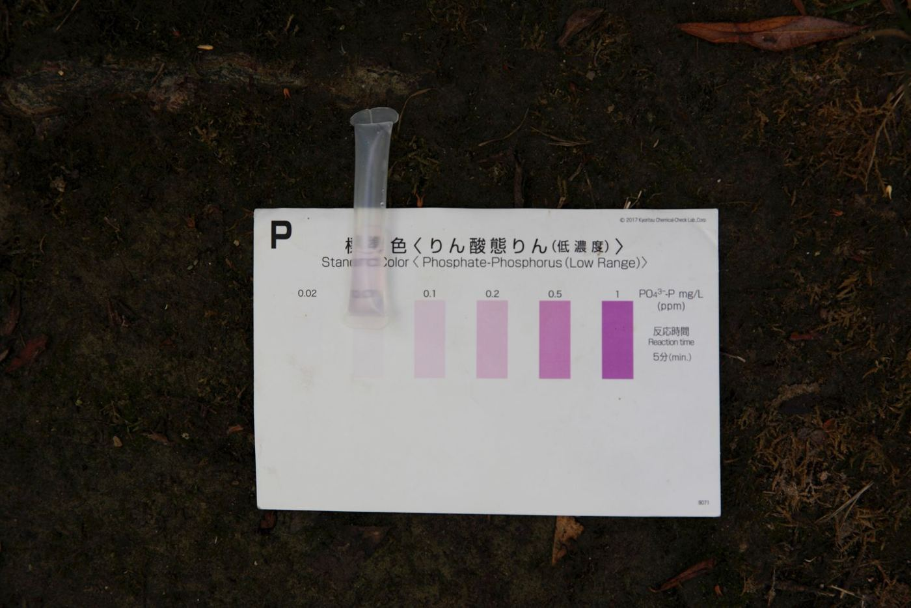
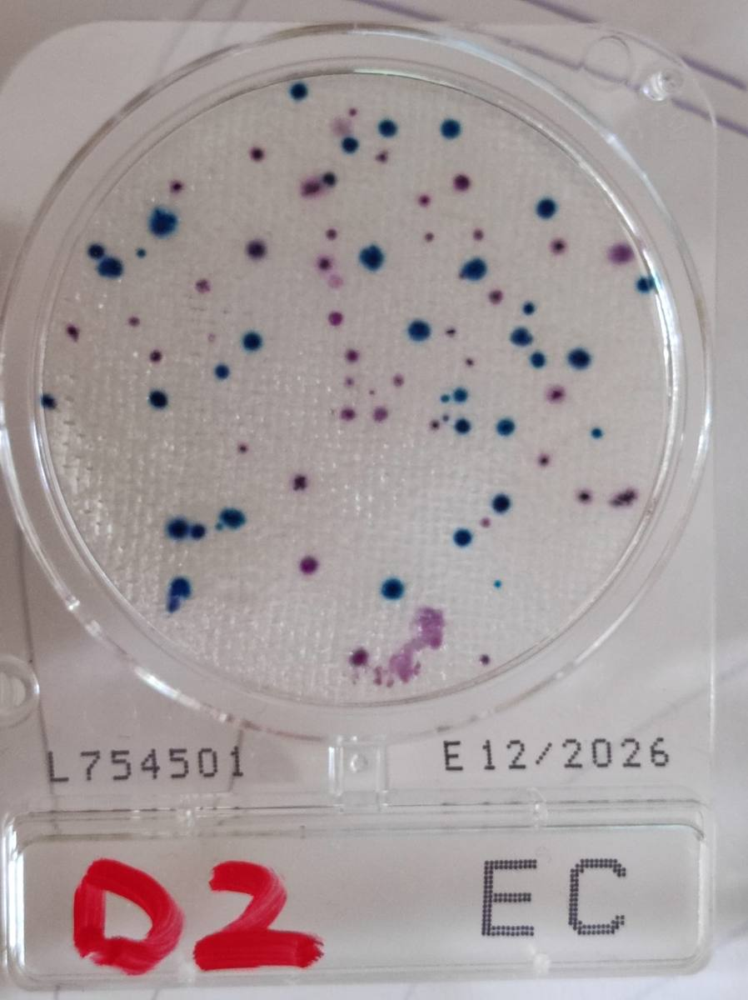

Da dove in poi il fiume non è più balneabile?
Scegli Escherichia coli e la vista *Profilo*: i punti si allineano da monte a valle e si vede a occhio dove la colonna supera la linea delle 1.000 UFC, il limite di balneabilità.
Campagna di monitoraggio
Dalle passeggiate di Walk Up Aniene alle cinque stazioni fisse di RomaUp, nel tratto urbano del fiume.

2021
Walk Up Aniene ha rappresentato la prima esperienza di collaborazione tra A Sud e Insieme per l'Aniene, all'interno del programma europeo Citizen Science ACTION (Horizon 2020), che ha fornito supporto tecnico e scientifico.
L'obiettivo del progetto è stato rafforzare la cura delle aree naturali urbane promuovendo il coinvolgimento civico in attività di monitoraggio ambientale partecipato: le persone che visitano la riserva dell'Aniene, attraverso le loro passeggiate, possono monitorare lo stato ambientale del fiume grazie all'osservazione dell'ambiente fluviale.
Grazie alla raccolta e all'analisi partecipata dei dati, Walk Up Aniene ha permesso di illustrare lo stato ambientale corrente della riserva e degli ecosistemi fluviali, identificando punti di forza e criticità. Attraverso la mappatura GIS sono state registrate sia le criticità sia i punti di pregio ecologico, creando un database utile per la pianificazione territoriale e per la comunità.
Il progetto ha portato alla realizzazione di una mappa dello stato ambientale della fascia fluviale e ha permesso di elaborare proposte dal basso per la gestione della riserva naturale.
2022 – 2023
Nel 2022 A Sud ha ampliato l'iniziativa tramite il progetto RomaUp, fornendo strumentazioni scientifiche a basso costo alle associazioni locali e pubblicando una guida metodologica per il monitoraggio. Il progetto ha promosso il dialogo con enti istituzionali — Città Metropolitana di Roma, Comune di Roma, Regione Lazio — culminando in un accordo con ARPA Lazio per le analisi di laboratorio e le segnalazioni di emergenza.
Dopo le prime rilevazioni sul Tevere, l'anno successivo la campagna è stata estesa all'Aniene, affiancata dalla supervisione scientifica della Prof.ssa Bruna Gumiero.

Dove
I cinque punti di campionamento sull'Aniene si trovano tutti all'interno della Riserva Naturale della Valle dell'Aniene e si snodano tra il G.R.A. (punto E) e la confluenza con il fiume Tevere (punto A). I siti scelti sono strategici sia per la vicinanza a punti ritenuti critici, sia per la conformazione morfologica che ha reso l'accesso al fiume più agevole, trattandosi di un corso d'acqua con sponde non cementificate ma vegetate.
Subito prima della confluenza nel Tevere. Tratto degradato, con accesso diretto al fiume difficile.
All'interno dell'omonimo parco: l'accesso al fiume è una piattaforma in legno, attracco per le discese in rafting. Ambiente ricco di vegetazione e presenza di avifauna.
Attracco sul fiume a pochi metri dalla Casa del Parco, sede di Insieme per l'Aniene APS. Sponde ricche di vegetazione, ma anche di rifiuti e sporcizia.
Accesso al fiume tramite una scaletta in mattoni in prossimità di Ponte Mammolo, in corrispondenza di diverse aree coltivate. Vegetazione ripariale autoctona scarsa.
Accesso al fiume in prossimità del Grande Raccordo Anulare, un po' difficoltoso. La sponda ospita per il campionamento i pilastri del ponte sovrastante.
Il protocollo
Il fiume è caratterizzato da un inquinamento diffuso, legato a diversi contaminanti. Non potendo monitorare tutti i parametri esistenti, si è scelto di analizzare parametri «spia», sensibili a condizioni di criticità e la cui variazione oltre un certo range segnala uno squilibrio dell'ecosistema. Le analisi sono in continuità con quelle dell'anno precedente e hanno seguito un simile protocollo scientifico sotto la supervisione dell'ecologa fluviale Bruna Gumiero.
I parametri spia analizzati sono: azoto ammoniacale, indicatore della scarsità di ossigeno; nitrati e fosfati, indicatori di inquinamento da eccesso di nutrienti o eutrofizzazione; Escherichia coli, indicatore di inquinamento fecale recente, considerato efficace indicatore della sopravvivenza dei patogeni enterici nelle acque.
Tali parametri sono detti macrodescrittori perché, insieme all'analisi di BOD e COD e del fosforo totale, permettono di valutare lo stato ecologico del fiume utilizzando i valori stabiliti dal LIMeco. I parametri spia non riescono a stabilire le cause puntuali di fenomeni come le morie di pesci, ma mirano a dare un quadro complessivo. Si è scelto di monitorare questi parametri anche per il costo troppo elevato di analisi più specifiche come quelle per pesticidi, farmaci o PFAS. Oltre ai parametri del LIMeco sono stati analizzati pH, temperatura, conducibilità e torbidità.
Il LIMeco è una sorta di righello che misura la qualità ecologica del fiume ed è stato introdotto dall'ultima direttiva europea in tema di acque (Direttiva Quadro Acque 2000/60/CE).
Scegli un parametro per vederne l'andamento in tutte le stazioni. Le linee orizzontali sono le soglie di qualità: passandoci sopra con il mouse compaiono il valore, cosa significa superarle e le possibili cause.
La dashboard serve a farle delle domande: dove peggiora il fiume, quando è successo, quali punti superano le soglie di legge. Si muove in quattro mosse.
Scegli Escherichia coli e la vista *Profilo*: i punti si allineano da monte a valle e si vede a occhio dove la colonna supera la linea delle 1.000 UFC, il limite di balneabilità.
Scegli ammonio e la vista *Andamento*, poi lascia acceso un solo punto. I picchi isolati raccontano un episodio; una riga sempre alta racconta un apporto continuo.
Scegli ossigeno disciolto in *Andamento* e tieni accesi due o tre punti: l'acqua fredda trattiene più ossigeno, quindi un calo estivo è normale, un calo invernale no.
Scegli conducibilità e la vista *Mappa*: i cerchi si colorano per livello e si individua subito il tratto in cui il valore cambia bruscamente rispetto ai punti vicini.
Caricamento dei dati… 5 punti di campionamento, 11 campagne da apr 2022 a mar 2023, 294 misure. Se il grafico non compare, il browser sta bloccando il caricamento dei dati: prova ad aggiornare la pagina.
Qui sotto l'interpretazione dei risultati, parametro per parametro. Nel report in fondo alla pagina trovi informazioni più specifiche su parametri e risultati.

µS/cm
Da tenere d'occhioIl D.Lgs. 31/2001 indica che la conducibilità delle acque dolci non dovrebbe superare i 2.500 µS/cm. In un bacino calcareo come quello dell'Aniene i valori normali sono tra 250 e 800 µS/cm. Oltre i 1.000 possono indicare intensa attività umana o forte evaporazione, oltre i 1.500 un possibile inquinamento da scarichi urbani, industriali o agricoli.

mg/L di azoto nitrico
Da tenere d'occhioIl kit misura l'azoto nitrico, non i nitrati: per ottenere i nitrati si moltiplica per 4,427. L'indice LIMeco classifica la qualità in cinque livelli, in mg/L di azoto nitrico: livello 1 (elevato) sotto 0,6; livello 2 (buono) sotto 1,2; livello 3 (sufficiente) sotto 2,4; livello 4 (scarso) sotto 4,8; livello 5 (cattivo) sopra 4,8.

unità di pH
Variazione stagionaleLe acque dolci hanno in genere un pH tra 6 e 8, a seconda delle caratteristiche del terreno circostante e del substrato. I fiumi che attraversano terreni con rocce vulcaniche, per esempio, hanno valori molto più acidi.

mg/L
CriticoL'indice LIMeco si riferisce al fosforo totale e non ai fosfati, quindi il confronto è solo indicativo. Poiché i fosfati sono la componente principale del fosforo nelle acque superficiali, permettono comunque delle valutazioni. I livelli, in mg/L di fosforo totale, sono: livello 1 (elevato) sotto 0,05; livello 2 (buono) 0,10; livello 3 (sufficiente) 0,20; livello 4 (scarso) 0,40; livello 5 (cattivo) sopra 0,40.

mg/L di azoto
CriticoIn natura, nelle acque superficiali, sta sotto 0,2 mg/L. I livelli LIMeco, in mg/L di ammonio, sono: livello 1 (elevato) sotto 0,03; livello 2 (buono) 0,06; livello 3 (sufficiente) 0,12; livello 4 (scarso) 0,24; livello 5 (cattivo) sopra 0,24.

UFC/100 mL
Da tenere d'occhioI livelli in UFC sono: livello 1 (elevato) fino a 100; livello 2 (buono) fino a 1.000; livello 3 (sufficiente) fino a 5.000; livello 4 (scarso) fino a 20.000; livello 5 (cattivo) oltre 20.000. L'Aniene non è classificato come balneabile.
Per approfondire, o se hai dubbi su quello che hai letto, qui trovi i documenti completi da cui vengono i dati e le interpretazioni di questa pagina.
Il report della prima annualità del monitoraggio civico, curato da A Sud: le crisi ambientali di Roma, il progetto RomaUp, la metodologia e i risultati della campagna sul Tevere da cui è nato il percorso poi esteso all'Aniene. Supervisione scientifica di Bruna Gumiero.
Scarica il PDFIl report di A Sud con i risultati completi della campagna sull'Aniene, stazione per stazione e parametro per parametro.
Scarica il PDFIl report dell'intero progetto RomaUp: metodologia, rete territoriale e risultati sia sul Tevere sia sull'Aniene. Qui trovi anche la mappa dei punti riprodotta in questa pagina.
Scarica il PDFL'allegato di approfondimento sul rapporto tra i corsi d'acqua e il tessuto urbano di Roma.
Scarica il PDF